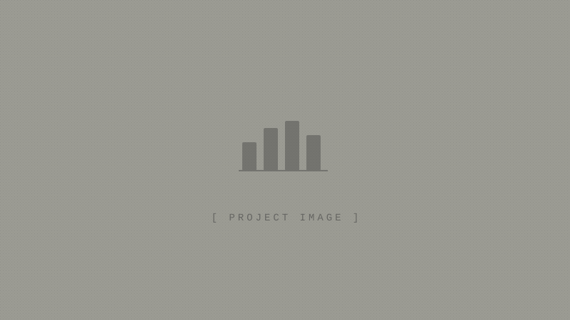

Game Time Couture — Business Analytics
End-to-end business intelligence platform for an e-commerce apparel brand. Built ETL pipelines for Square/Shopify sales data, automated reporting, and interactive dashboards for real-time business insights.
Python
SQL
Pandas
Dash
Plotly
GraphQL
View on GitHub